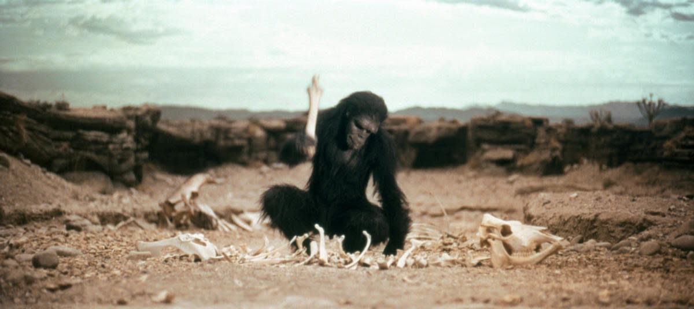

Pioneer Myriarm의 'beginning point'
In the beggining God created the heavens and the earth.
And the earth was waste and void; and darkness was upon the face of th deep: and the spirit of God moved upon the face of the waters.
And God said, Let there be light: and there was light (Gen 1:1-3)
- voyager
- voyager II
- Cassini
- messenger
